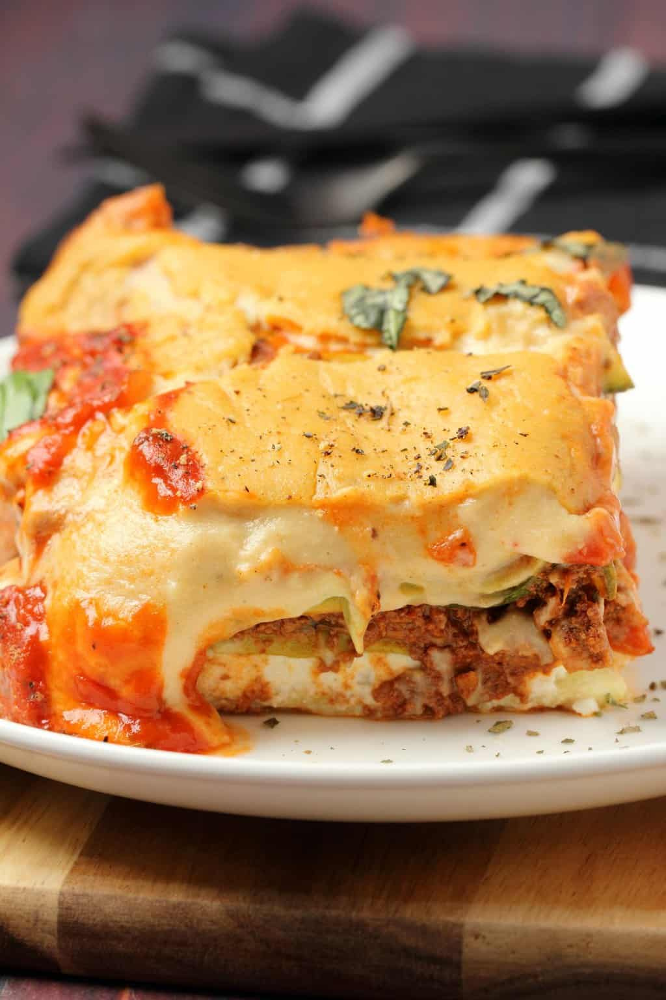

The Best Vegan Lasagna Recipe

Description
You will revel in the sublime flavors of this vegan lasagna. It is simple to make but you'd never know it from the taste. Although this is not a whole-foods, plant-based recipe [it contains refined flour and some other non-whole foods ingredients], it is nonetheless very healthy as it has lots of fresh veggies and other wholesome ingredients.
Ingredients
For the Vegan Bolognese:
- 2 ½ cups Cremini Mushrooms (240g)
- 8 ounces Extra Firm Tofu (226g)
- 1 cup Walnuts (100g)
- ½ Medium Onion White, Yellow or Brown, Chopped
- 1 Tbsp Crushed Garlic
- 1 Tbsp Olive Oil
- 1 tsp Dried Basil
- 1 tsp Oregano
- ¼ tsp Cayenne Pepper
- 1 Tbsp Dark Soy Sauce
- ½ cup Tomato Paste (130g)
- 1 cup Marinara Sauce (240ml)
- 1 Tbsp Coconut Sugar
- Salt and Pepper to taste
For the Vegan Cheese Sauce:
- 6 Tbsp Olive Oil
- 5 Tbsp All Purpose Flour
- 4 cups Soy Milk (960ml)
- 2 Tbsp Dijon Mustard
- ⅔ cup Nutritional Yeast (40g)
- 2 tsp Onion Powder
- 2 tsp Garlic Powder
- ½ tsp Smoked Paprika
- 1 tsp Salt
- ¾ tsp Ground Black Pepper
For Assembling:
- 2 ½ cups Marinara Sauce (600ml)
- 1 Recipe Vegan Ricotta
- 12 Sheets Spinach Lasagna*
- 4 Small Zucchini Sliced
Steps
Vegan Bolognese
- Slice the mushrooms and add them to the food processor. Process until very finely chopped. Add them to a mixing bowl.
- Crumble the tofu with a fork and add it to the mixing bowl.
- Add the walnuts to the food processor, process into crumbs and then add it to the mixing bowl.
- Mix the mushrooms, tofu and walnuts together in the mixing bowl.
- Add the chopped onion to a pot with the crushed garlic, olive oil, dried basil, oregano and cayenne pepper and sauté until the onions are softened.
- Add the tofu/walnut/mushroom mix, dark soy sauce, tomato paste and marinara sauce and sauté until you have a soft bolognese sauce with no visible liquid.
- Add coconut sugar (for flavor balance) and salt and pepper to taste.
Vegan Cheese Sauce
- Add the olive oil to a pot and let it heat until hot. Add the flour and fry it briefly in the oil, stirring vigorously and then add in all the soy milk and whisk it vigorously to get rid of lumps.
- Bring it to the boil stirring constantly. When it boils let it continue to boil, stirring all the while, for a few minutes until it thickens.
- Remove it from the heat and add dijon mustard, nutritional yeast, onion powder, garlic powder, smoked paprika, salt and ground black pepper and stir in.
Assemble:
- Preheat the oven to 390°F (200°C).
- Add a thin layer of marinara sauce to the bottom of a deep 9x13 baking dish.
- Then add 4 sheets of spinach lasagna noodles.
- Then add half the vegan bolognese and spread it into an even layer.
- Then add a thin layer of vegan cheese sauce.
- Then add a layer of sliced zucchini.
- Then add all the vegan ricotta into one thick layer.
- Then add 4 sheets of spinach lasagna noodles.
- Then add another layer of marinara sauce.
- Then add another thin layer of vegan cheese sauce, leaving the remainder to add on last.
- Then add the rest of the vegan bolognese.
- Then add a layer of sliced zucchini.
- Then add another 4 sheets of spinach lasagna noodles.
- Then add another layer of marinara, leaving a small amount behind for decorating the top.
Bake:
- Cover with foil and bake for 30 minutes.
- After 30 minutes bring it out, remove the foil and add all the remaining vegan cheese sauce to the top.
- Return to the oven and bake uncovered for a further 20 minutes.
- Bring it out, stick in a knife to make sure it's cooked, and then add a generous drizzle of marinara sauce to the middle section of the baked lasagna.
- Decorate with fresh chopped basil, dried basil and ground black pepper.
Note: This website is strictly intended as a project for learning web development. The recipe above was copied from Loving it Vegan, and the owner of that site retains copyright to all images and intellectual property contained herein.